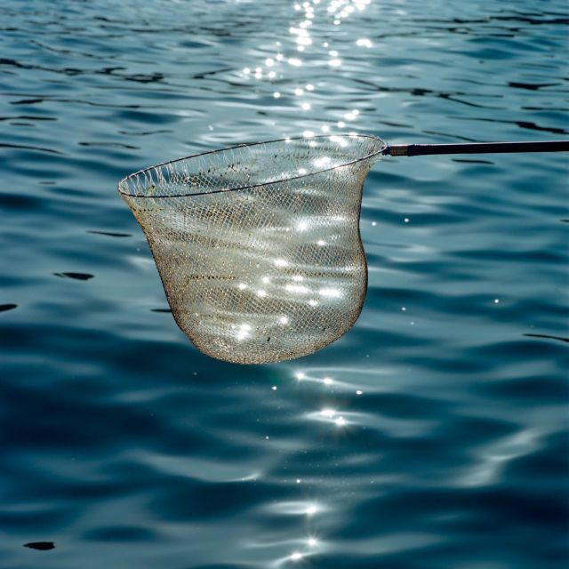

浏览内容
App 下载
知乎日报
每天三次 每次七分钟
在中国，资讯类移动应用的人均阅读时长是 5 分钟，而在知乎日报，这个数字是 21。
iOS 版
Android 版
豌豆荚
91 市场
360 市场
最新内容
浏览内容
有动画为什么还看漫画？
用 99 行代码，实现《冰雪奇缘》
为什么日本酒厂门面一定要挂个球？
瞎扯 · 如何正确地吐槽
该不该和自己死磕「我的工作有什么意义」这种问题？
《恋爱小行星》里有哪些值得注意的细节？
纳米机器人的研究进展怎么样了？
有亿万资产的老板，可能被告到倾家荡产吗？
瞎扯 · 如何正确地吐槽
面试时怎样自我介绍比较好？
操作系统能否知道自己处于虚拟机中?
如何评价新海诚？
为什么有人放弃年薪 20 万的工作去开便利店？
瞎扯 · 如何正确地吐槽
小事 · 叶问与我
为什么算命、风水的信众多到令人咋舌，其中还不乏受过高等教育的人？
2019 有哪些让你印象深刻的建筑？
拍摄视频会成为 5G 时代第一个火起来的应用场景吗？
如何理解高智商反社会人格？
小事 · 匆匆十年
2019 年，天文领域那些刷屏的大事
篮球运动员要如何面对「中年危机」？
「十年禁渔计划」意味着什么？

大小达 1 GB 甚至 1 TB 的图片是什么样的？
李玫瑾教授「不打不骂不说教不走开」的育儿方式有效吗？
2020 年的创业风口是什么？
火影计算题：完全体须佐能乎高度究竟有多少？不同阶段的呢？
为什么很多人喜欢猪油炒菜?
瞎扯 · 如何正确地吐槽
斯特恩与 NBA
更多精彩内容可在知乎日报应用中查看